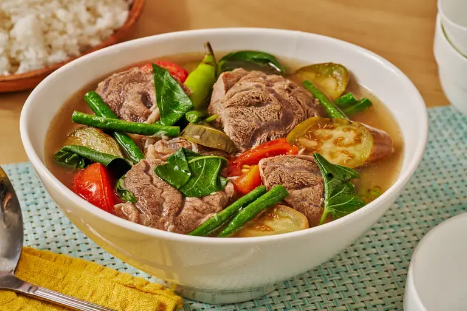

Home
Pork Sinigang

Description
Pork Sinigang is a famous Filipino sour soup known for its refreshing and comforting taste. It is cooked by
simmering pork with vegetables in a tamarind-based broth. The sour and savory flavor makes it one of the most
loved Filipino comfort foods, especially during rainy days.
Ingredients
- 1 kg pork belly (cut into cubes)
- 6 cups water
- 1 pack sinigang mix
- 1 onion (quartered)
- 2 tomatoes (quartered)
- 1 radish (sliced)
- 1 eggplant (sliced)
- 1 bunch kangkong
- 2 long green chili peppers
- Fish sauce or salt to taste
Step-by-Step Cooking Instructions
- Boil the Pork - In a pot, combine pork and water. Bring to a boil and remove the scum that floats on
top.
- Add Aromatics - Add onions and tomatoes. Let it simmer for about 30–40 minutes until the pork becomes
tender.
- Add the Sour Base - Add the sinigang mix and stir well to combine.
- Add Vegetables - Add radish and eggplant. Cook for about 5–7 minutes.
- Add Remaining Ingredients - Add kangkong and green chili peppers.
- Season the Soup - Add fish sauce or salt according to your taste.
- Serve - Turn off the heat and serve hot with steamed rice.